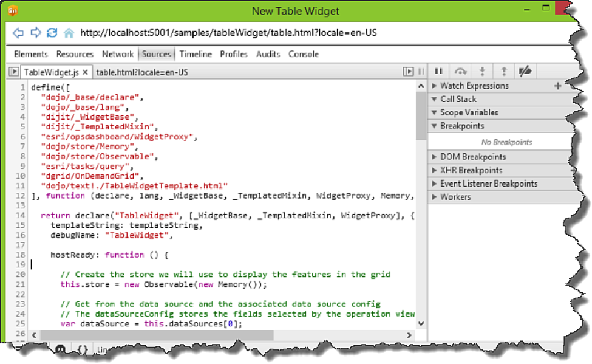

Hide Table of Contents
Hide Table of Contents
 Tutorials
About the API
Work with the API
Graphics and feature layers
Popups and Info Windows
Geoprocessor
Operations Dashboard
Create extensions
Mobile
ArcGIS Server Services
References
What's New archive
Tutorials
About the API
Work with the API
Graphics and feature layers
Popups and Info Windows
Geoprocessor
Operations Dashboard
Create extensions
Mobile
ArcGIS Server Services
References
What's New archive
This tutorial shows you how to:
- Create the files for the widget
- Configure the manifest file
- Create the user interface
- Add programming logic
- Update the style
- Create an operation view with the extension
- Debug the extension
A widget in an operation view is an informational display that is used to provide quicker access to the information you need. Widget types include bar or pie charts, lists or indicators, and more. In this tutorial you will create an attribute table widget that shows the attribute information of the features in the form of a grid from the data source used by the widget, the name of the data source, and the number of features in the data source.
View tutorial filesBefore you begin, you must set up a development environment to get Windows Operations Dashboard and prepare it to run in developer mode.
-
Create the files for the widget
In the extensions folder that you created in the Set up a development environment tutorial, create a folder named tableWidget, and create the following files in that folder:
- table.json — The manifest file for the extension. It is a JSON file that describes how the extension should be activated and used inside of an operation view.
- table.html — An HTML5 file that represents the user interface (UI) of a widget that will load when the widget finishes initialization.
- tableWidgetTemplate.html — A template or an HTML fragment that will be included in the table.html file. This template has the widget's actual UI, and its business logic is implemented in the tableWidget.js file.
- tableWidget.js — A JavaScript file that defines the table widget class, which will be created as a Dojo widget, or a dijit (the term "widget" here has no association with the concept of widgets in Operations Dashboard).
- style.css — A CSS file that defines the widget's style.
- A PNG (or JPG) image file — This file will be the thumbnail of the widget and needs to have the size of 350px by 232px.
Note: You can assign different names to the above files.
-
Configure the manifest
Open the table.json file, or the manifest file, in your IDE and add the following text:
{ "type": "Widget", "title": "Table Widget", "description": "A widget that shows the attributes of the features from a data source", "thumbnailPath": "table.png", "useDataFromView": true, "runtime": { "path": "table.html" }, "configuration": { "requireDataSource": true }, "credits": "Esri" }Additional details to keep in mind when configuring this file:
- The type property determines the type of the extension. In this case, the type is a widget. Make sure the letter "W" in the word "Widget" is capitalized and the spelling is correct, otherwise the widget will not load.
- The thumbnailPath property refers to the widget's thumbnail path. Notice that its path is relative to that of the manifest file.
- The useDataFromView property indicates whether the extension will use data from an operation view. Since this table widget will show the attribute information of the features from a data source, this property must be set to true.
- The runtime object refers to the UI of the widget (table.html) that loads once the widget has initialized. The path to the table.html file is relative to that of the manifest file.
-
The configuration object has a number of properties that control the behavior and UI of the Settings
dialog when configuring an extension in an operation view.
Embedded in the configuration object is a requireDataSource property. When it is set to true, the widget's Settings dialog will include a data source dropdown menu for the author of the operation view to choose a data source for the widget. This kind of widget is considered a data source consumer.
The configuration object will be covered in more depth in the Create a configurable extension topic.
To learn more about the manifest file properties, see Manifest file.
-
Create the user interface
-
Open the table.html file, and add the following text to set up the basic structure of the HTML5 file:
<!DOCTYPE html> <html> <head lang="en"> <meta charset="UTF-8"> <link rel="stylesheet" type="text/css" href="style.css"/> </head> <body> </body> </html> -
Between the
<body>tags, create a<div>and add a "data-dojo-type" attribute with the value "extension/TableWidget" as shown below. This attribute will be used to instantiate an "extension/TableWidget" object that comes from the table widget dijit you'll create in tableWidget.js. file<body> <div data-dojo-type="extension/TableWidget"></div> </body> -
Open the TableWidgetTemplate.html file and add the HTML fragment.
<div> <!-- Display data source name and the number of features --> <label class="dataSourceInfoLabel" data-dojo-attach-point="infoLabel"></label> <!-- Show the features on an attribute table--> <!-- Add the dgrid-autoheight class to the table so that its height will auto-adjust based on the contents --> <table class="dgrid-autoheight" data-dojo-attach-point="gridDiv"></table> </div>This defines the UI of the widget. The HTML fragment has a
labelelement that displays the name and feature count of the data source used by this widget. Under that is a Dojo grid, or a "dgrid", that shows the attribute information of the features.
-
Open the table.html file, and add the following text to set up the basic structure of the HTML5 file:
-
Add programming logic
-
Open the table.html file again. Before the closing
<body>tag, add the<script>block with the dojoConfig object shown below.The dojoConfig object defines which module (i.e. the table widget dijit) loads. The "async" and "parseOnLoad" properties are set to true. To learn more about dojoConfig, read the Dojo Toolkit documentation.
<script> var dojoConfig = { async: true, parseOnLoad: true, paths: { "extension": location.pathname.replace(/\/[^/]+$/, '') } }; </script>Note: Within the "paths" object, the URI of the extension folder is referenced as "extension". This is used to construct the relative path to the table widget dijit (i.e. "extension/TableWidget") in the dojo-data-type attribute of a
<div>element in this file. -
Under the
<script>block from the previous step, add another<script>block referencing the ArcGIS API for JavaScript.You must load the dojoConfig object before loading the ArcGIS API for JavaScript, otherwise the dojoConfig object will not load.
<script src="//js.arcgis.com/3.14/"></script> -
Open the tableWidget.js file, and add the following
definefunction.define([ "dojo/_base/declare", "dojo/_base/lang", "dijit/_WidgetBase", "dijit/_TemplatedMixin", "esri/opsdashboard/WidgetProxy", "dojo/store/Memory", "dojo/store/Observable", "esri/tasks/query", "dgrid/OnDemandGrid", "dojo/text!./TableWidgetTemplate.html" ], function (declare, lang, _WidgetBase, _TemplatedMixin, WidgetProxy, Memory, Observable, Query, Grid, templateString) { });This function will be used to define the table widget dijit. Load the dependent modules and include a callback function with the modules as parameters.
-
With the modules loaded, declare a class titled "TableWidget".
The second parameter is an array of super classes that are inherited by the table widget class. The third parameter is an object that will contain the methods that will be called throughout the lifecycle of the class.
... "dojo/text!./TableWidgetTemplate.html" ], function (declare, lang, _WidgetBase, _TemplatedMixin, WidgetProxy, Memory, Observable, Query, Grid, templateString) { return declare("TableWidget", [_WidgetBase, _TemplatedMixin, WidgetProxy], { }); }); -
Inside the TableWidget class, load the TableWidgetConfigTemplate.html file into the templateString
as an inline string.
return declare("TableWidget", [_WidgetBase, _TemplatedMixin, WidgetProxy], { templateString: templateString, }); -
After setting the template string, add a
hostReadycallback function.This callback will be invoked when Operations Dashboard signals to the extension that their relationship is established.
hostReady: function () { // Create the store we will use to display the features in the grid this.store = new Observable(new Memory()); // Get from the data source and the associated data source config // The dataSourceConfig stores the fields selected by the operation view publisher during configuration var dataSource = this.dataSourceProxies[0]; var dataSourceConfig = this.getDataSourceConfig(dataSource); // Build a collection of fields that we can display var fieldsToQuery = []; var columns = []; dataSource.fields.forEach(function (field) { switch (field.type) { case "esriFieldTypeString": case "esriFieldTypeSmallInteger": case "esriFieldTypeInteger": case "esriFieldTypeSingle": case "esriFieldTypeDouble": fieldsToQuery.push(field.name); columns.push({field: field.name}); return; } }); // Create the grid this.grid = new Grid({ store: this.store, cleanEmptyObservers: false, columns: columns }, this.gridDiv); this.grid.startup(); // Create the query object fieldsToQuery.push(dataSource.objectIdFieldName); this.query = new Query(); this.query.outFields = fieldsToQuery; this.query.returnGeometry = false; },At this point you should have now completed the following tasks inside this callback:
- Created a memory store that will be used to populate the attribute table.
- Obtained the alpha-numeric fields of the selected data source. These fields will be queried by the widget.
- Created a dgrid object based on the alpha-numeric fields.
- Created a query object to execute a query on the data source.
-
After creating the
hostReadycallback, add adataSourceExpiredcallback.This callback is called when the widget is initialized. The widget queries for the features from the data source and then displays the attribute information of the features in the table.
dataSourceExpired: function (dataSource, dataSourceConfig) { // Execute the query. A request will be sent to the server // to query for the features. // The results are in the featureSet dataSource.executeQuery(this.query).then(lang.hitch(this, function (featureSet) { // Show the name of the data source and the number of features // returned from the query this.updateDataSourceInfoLabel(dataSource.name, featureSet); // Show the features in the table this.updateAttributeTable(featureSet, dataSource); })); },Note: This callback will also be called when:
- A refresh interval of your view's data source occurs. Details about data sources with refresh settings can be found here.
- The map extent changes through panning or zooming. This is not applicable to external data sources.
-
After creating the
dataSourceExpiredcallback, add theupdateDataSourceInfoLabelhelper method to display the name and feature count of the data source.updateDataSourceInfoLabel: function (dataSourceName, featureSet) { // Compose the correct string to display var dataSourceInfo = dataSourceName; var featureCount = featureSet.features.length; if (featureCount === 0) dataSourceInfo += " has no feature"; else dataSourceInfo += " has " + featureCount + " features"; this.infoLabel.innerHTML = dataSourceInfo; }, -
After creating the
updateDataSourceInfoLabelmethod, add theupdateAttributeTablehelper method to display the attribute information of the features on the table.updateAttributeTable: function (featureSet, dataSource) { // For each feature put them in the store and overwrite any existing featureSet.features.forEach(lang.hitch(this, function (feature) { this.store.put(feature.attributes, {overwrite: true, id: feature.attributes[dataSource.objectIdFieldName]}); })); }
Your code for the TableWidget.js file should look like this:
define([ "dojo/_base/declare", "dojo/_base/lang", "dijit/_WidgetBase", "dijit/_TemplatedMixin", "esri/opsdashboard/WidgetProxy", "dojo/store/Memory", "dojo/store/Observable", "esri/tasks/query", "dgrid/OnDemandGrid", "dojo/text!./TableWidgetTemplate.html" ], function (declare, lang, _WidgetBase, _TemplatedMixin, WidgetProxy, Memory, Observable, Query, Grid, templateString) { return declare("TableWidget", [_WidgetBase, _TemplatedMixin, WidgetProxy], { templateString: templateString, debugName: "TableWidget", hostReady: function () { // Create the store we will use to display the features in the grid this.store = new Observable(new Memory()); // Get from the data source and the associated data source config // The dataSourceConfig stores the fields selected by the operation view publisher during configuration var dataSource = this.dataSourceProxies[0]; var dataSourceConfig = this.getDataSourceConfig(dataSource); // Build a collection of fields that we can display var fieldsToQuery = []; var columns = []; dataSource.fields.forEach(function (field) { switch (field.type) { case "esriFieldTypeString": case "esriFieldTypeSmallInteger": case "esriFieldTypeInteger": case "esriFieldTypeSingle": case "esriFieldTypeDouble": fieldsToQuery.push(field.name); columns.push({field: field.name}); return; } }); // Create the grid this.grid = new Grid({ store: this.store, cleanEmptyObservers: false, columns: columns }, this.gridDiv); this.grid.startup(); // Create the query object fieldsToQuery.push(dataSource.objectIdFieldName); this.query = new Query(); this.query.outFields = fieldsToQuery; this.query.returnGeometry = false; }, dataSourceExpired: function (dataSource, dataSourceConfig) { // Execute the query. A request will be sent to the server to query for the features. // The results are in the featureSet dataSource.executeQuery(this.query).then(lang.hitch(this, function (featureSet) { // Show the name of the data source and the number of features returned from the query this.updateDataSourceInfoLabel(dataSource.name, featureSet); // Show the features in the table this.updateAttributeTable(featureSet, dataSource); })); }, updateDataSourceInfoLabel: function (dataSourceName, featureSet) { // Compose the correct string to display var dataSourceInfo = dataSourceName; var featureCount = featureSet.features.length; if (featureCount === 0) dataSourceInfo += " has no feature"; else dataSourceInfo += " has " + featureCount + " features"; this.infoLabel.innerHTML = dataSourceInfo; }, updateAttributeTable: function (featureSet, dataSource) { // For each feature put them in the store and overwrite any existing // Potential improvement: Remove from the store the features that were not part of this update. featureSet.features.forEach(lang.hitch(this, function (feature) { this.store.put(feature.attributes, {overwrite: true, id: feature.attributes[dataSource.objectIdFieldName]}); })); } }); }); -
-
Update the style
Now that the extension UI and logic is in place, open the style.css file and add the following code to update the style of the UI elements.
html, body { width: 100%; height: 100%; margin: 0; padding: 0; overflow: hidden; } body { font: 13px sans-serif; font-family: "Segoe UI"; } label{ font-weight: bold; } .table { display: table; height: 100%; width: 100%; } .table-row { display: table-row; } .table-row.full { height: 100%; }Your extension is now ready for testing in Operations Dashboard.
-
Create an operation view with the extension
- Start Operations Dashboard in developer mode, and sign in to your ArcGIS organization as either a publisher or an administrator.
-
Create a single-display operation view with at least one data source (either through a webmap or an external data source). Make sure the data source has at least one alpha-numeric field. If you create a multi-display operation view, you can only open it in the Windows app, and you won't be able to debug your extension in the web browser.
Note: To learn more about creating an operation view, see Create an operation view.
-
Click on the Add Widget button.
The table widget should be listed under the Custom category. Double click the Table widget to add it to the view.
Tip: When an extension is loaded in the developer mode, it will have a red bounding box to help you distinguish it from the extensions created for the production environment.
- The Settings dialog of the widget appears. It should have a title textbox and a data source dropdown menu (the dropdown menu appears on the Settings dialog because you set the requireDataSource property in the manifest file to true). Select a data source and click OK. You have created a widget.
-
Debug the extension
With the widget in place, you can start debugging with the Operations Dashboard extension debugger.
-
Click the Debug button at the top of the table widget to launch the debugger.
Tip: You can also click the Dev Mode text at the upper right corner of the app, and then click the Open Debug Tool to launch the debugger.
-
Start inspecting the UI elements on the table.html file. Set break points and step through the business logic in the TableWidget.js file.
The URL to the table.HTML page shown on the debugger starts from localhost:<port number> because the extension is running from a local server.

Tip: If you make a change to the HTML or JS file during debugging, you can click the Refresh button at the top left corner of the debugger to get the update. However, if you make any changes to the manifest file, you will need to save the operation view, close it, and reopen it.
To debug your extension using the web browser, complete the following steps:
- Save your operation view.
- Click the Dev Mode text at the upper right corner of the Windows app.
- Click Open in Browser. The operation view will be opened in your machine's default web browser.
-
Use your browser's built-in debugging tool to debug the extension.
Note: Since you're hosting your extension in the local server, you need to keep the Windows app as well as the local server running.
-
Click the Debug button at the top of the table widget to launch the debugger.